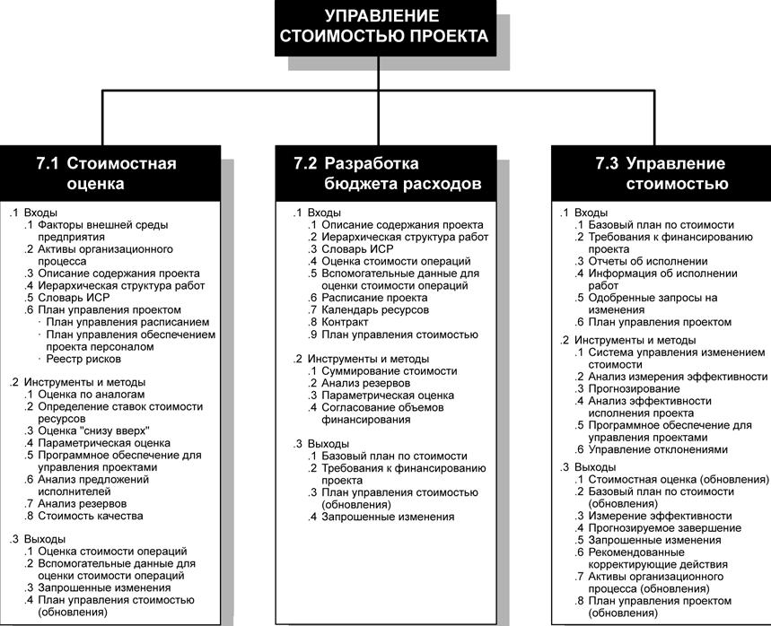
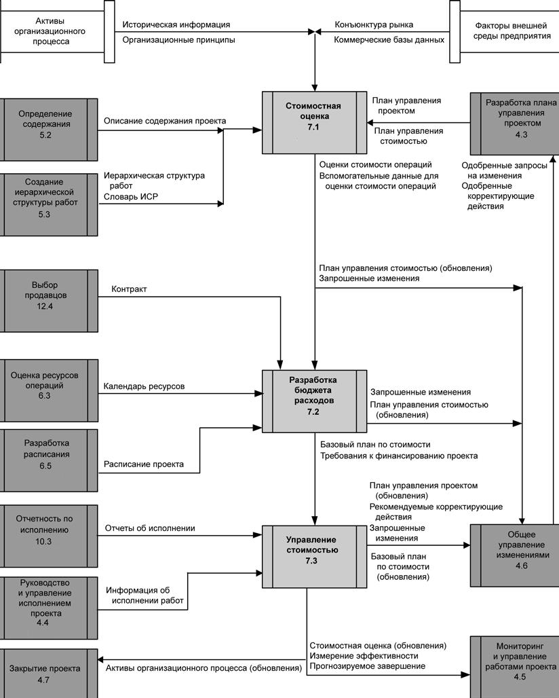

Введение
Управление стоимостью проекта объединяет процессы, выполняемые в ходе планирования, разработки бюджета и контролирования затрат, и обеспечивающие завершение проекта в рамках утвержденного бюджета. На рис. 10.1 приводится общая схема указанных ниже трех процессов, а на рис. 10.2 показана диаграмма взаимодействия этих процессов и их входы, выходы и другие процессы из данной области знаний:
7.1 Стоимостная оценка - определение примерной стоимости ресурсов, необходимых для выполнения операций проекта.
7.2 Разработка бюджета расходов - суммирование оценок стоимости отдельных операций или пакетов работ и формирование базового плана по стоимости.
7.3 Управление стоимостью - воздействие на факторы, вызывающие отклонения по стоимости, и управление изменениями бюджета проекта.
Эти процессы взаимодействуют как друг с другом, так и с процессами из других областей знаний. В зависимости от потребностей проекта в каждом процессе могут принимать участие один или несколько человек или групп.

Рисунок 10.1 - Общая схема управления стоимостью проекта

Рисунок 10.2 - Диаграмма зависимости процессов для процесса управлениястоимостью проекта
Управление стоимостью проекта касается прежде всего стоимости ресурсов, необходимых для выполнения плановых операций. Однако при управлении стоимостью проекта следует учитывать, как принимаемые решения скажутся на стоимости эксплуатации, обслуживания и технической поддержки продукта, услуги или результата проекта.
Например: уменьшение количества контрольных оценок на этапе проектирования может снизить стоимость проекта за счет повышения эксплуатационных расходов заказчика.
Управление стоимостью проекта в таком более широком значении часто называют "учетом затрат в течение жизненного цикла". Учет затрат в течение жизненного цикла в сочетании с методами оптимизации выгод могут способствовать оптимизации процесса принятия решений, а также снижению стоимости и времени выполнения проекта, повышению качества и эффективности результата поставки проекта.
Во многих областях приложения прогнозирование и перспективный анализ финансовой эффективности продукта проекта выполняется вне рамок проекта. В том случае, когда прогнозирование и анализ включены в проект, управление стоимостью проекта включает в себя дополнительные процессы и ряд методов из области общего менеджмента, например прибыль на инвестированный капитал, дисконтированный поток наличности и анализ окупаемости инвестируемых средств.
Управление стоимостью проекта учитывает специфические требования к информации, предъявляемые различными участниками проекта. Это связано с тем, что различные участники проекта могут рассчитывать стоимость проекта разными способами и в разные моменты времени. Например, в случае покупки оборудования его стоимость может оцениваться на момент принятия или сообщения решения о покупке, на момент оформления заказа, на момент поставки, а его фактическая стоимость зачитывается или фиксируется при ведении расходов проекта.
В некоторых проектах, особенно малых, стоимостная оценка и разработка бюджета расходов настолько тесно взаимосвязаны, что рассматриваются как единый процесс, который может выполняться одним человеком за относительно короткий период времени. В данном руководстве эти процессы рассматриваются как отдельные, так как инструменты и методы каждого из них различны. Возможности изменения стоимости больше всего на ранних стадиях проекта, поэтому очень важно разработать определение содержания на ранней стадии.
Работам, составляющим три процесса управления стоимостью проекта, обычно предшествует организация планирования, выполняемая командой управления проектом, хотя эта работа не выделена здесь в виде отдельного процесса. Эта организация планирования является частью процесса разработки плана управления проектом, на основе которого создается план управления стоимостью, определяющий формат и критерии планирования, структуры, оценки, бюджета и контроллинга стоимости проекта. Процессы управления стоимостью и связанные с ними инструменты и методы различаются в зависимости от конкретной области применения. Они обычно определяются на стадии определения жизненного цикла проекта и документально фиксируются в плане управления стоимостью.
Например, в плане управления стоимостью могут фиксироваться:
- Степень точности. При стоимостной оценке плановых операций данные округляются с определенной точностью (например, до $100 или $1000) в зависимости от содержания операций и величины проекта; в это округление могут включаться затраты на непредвиденные обстоятельства.
- Единицы измерения. Для каждого типа ресурсов оговариваются единицы измерения, например человеко-часы, человеко-дни, человеко-недели, единовременная выплата.
- Связи организационных процедур. Каждый элемент ИСР, используемый для калькуляции стоимости проекта, называется контрольным счетом (КС). Каждому контрольному счету присваивается кодовый номер или номер счета, который непосредственно связан с бухгалтерской системой исполняющей организации. Если в контрольный счет включается стоимостная оценка планируемых пакетов работ, то туда же включается и метод разработки бюджета планируемых пакетов работ.
- Контрольные пороги. Можно определить пороги отклонений для затрат или иных показателей (например, человеко-дней или объема продукции) в четко определенные моменты времени на протяжении проекта для отслеживания соответствия фактического отклонения оговоренному ранее.
- Правила расчета освоенного объема. Три примера: 1) определяются формулы расчета для управления освоенного объема, необходимые для составления прогноза до завершения; 2) определяются критерии кредита освоенного объема (например, 0-100, 0-50-100 и т. д.); 3) определяется уровень ИСР, на котором выполняется анализ с помощью метода освоенного объема.
- Форматы отчетности. Определяются форматы различных отчетов по затратам.
- Описания процессов. Документально фиксируются описания каждого из трех процессов управления стоимостью.
Все вышеуказанное и, при необходимости, иная информация включается в план управления стоимостью, либо в основной текст плана, либо в виде приложений. План управления стоимостью входит в состав плана управления проектом или является по отношению к нему вспомогательным планом; в зависимости от нужд проекта он может быть формальным или неформальным и иметь большую или меньшую степень детализации.
План управления стоимостью разрабатывается на ранней стадии планирования проекта и определяет рамки для каждого из трех процессов управления стоимостью для обеспечения эффективности и согласованности этих процессов.